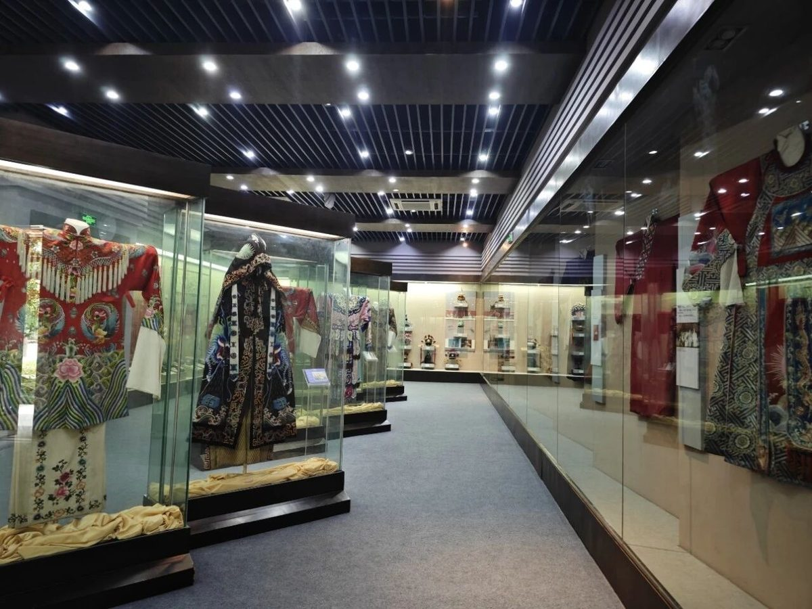
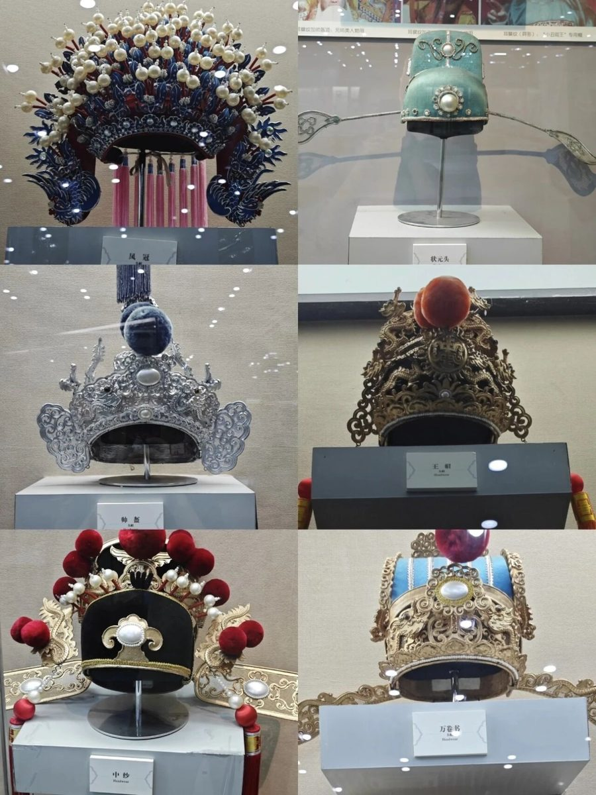
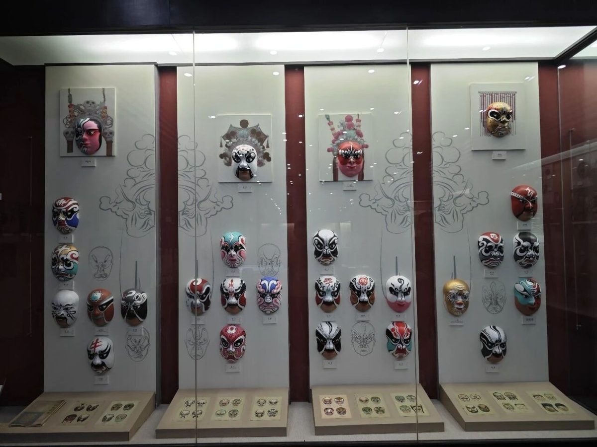
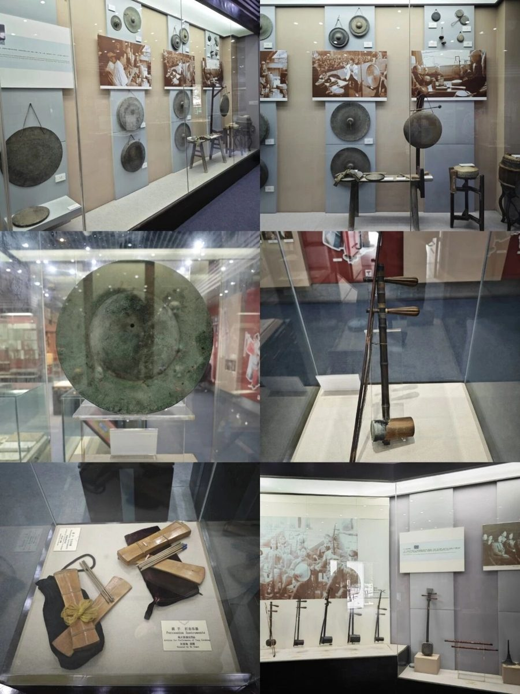
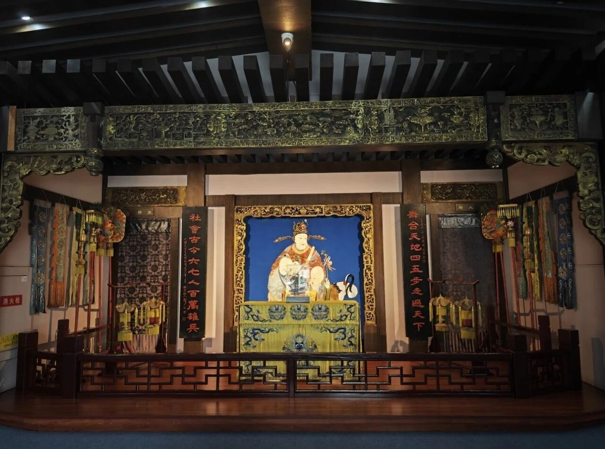
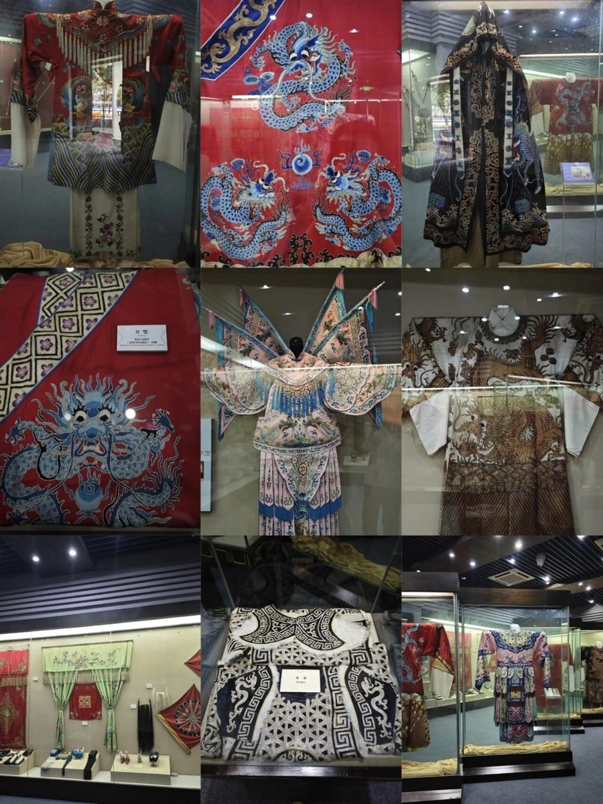
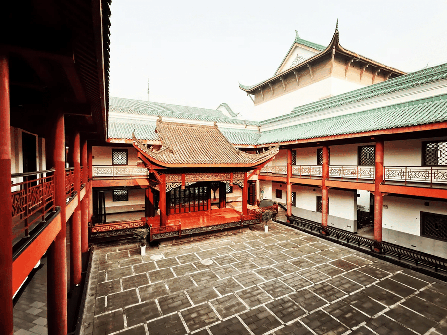
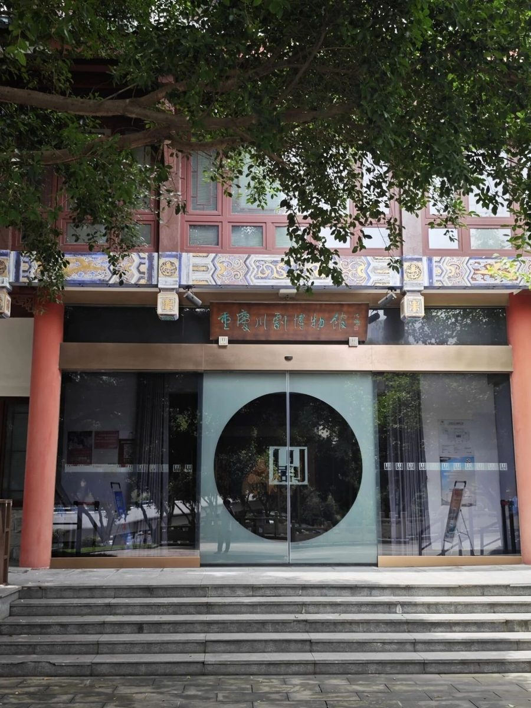
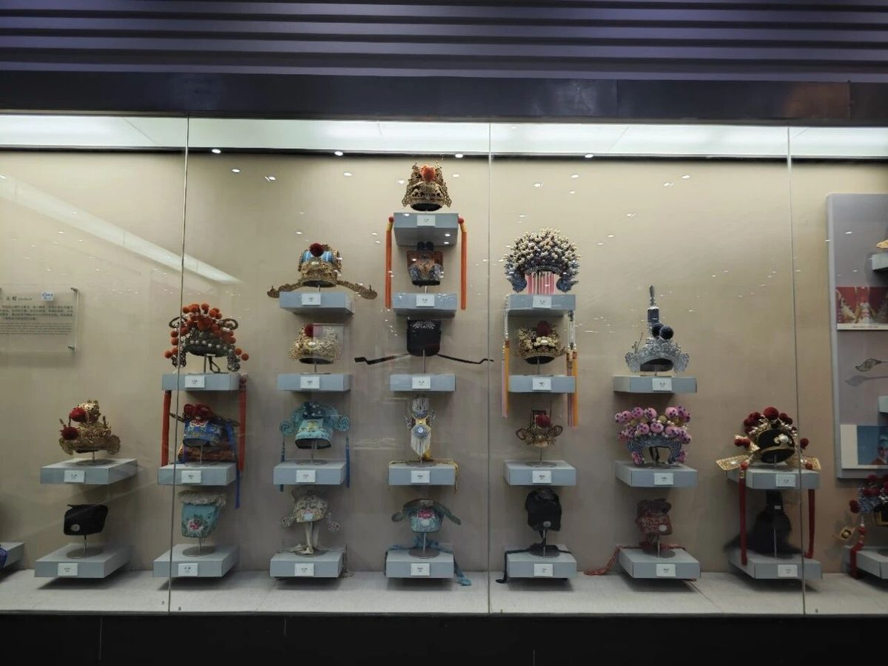

【行者无疆·文化科普——重庆川剧博物馆】

梅花瓣中听川韵——重庆川剧博物馆的活态传承
在重庆北部新区，一组形似梅花花瓣的建筑群静静绽放——这里便是重庆川剧博物馆。它不仅是全国首座以川剧为主题的专题博物馆，更是一座活态的非遗传承空间，将三百年的川剧艺术以可感、可触、可体验的方式娓娓道来。
建筑·梅花形态下的古今对话
博物馆建筑本身便是艺术的结晶。其整体采用梅花形布局，五片“花瓣”分别承载展览、演出、教学等不同功能。梅花“香自苦寒来”的意象，恰与川剧历经时代变迁依然蓬勃的生命力相契合。步入大厅，一座金漆重绘的明清古戏台最为震撼。它由异地迁建的原件组装而成，曾见证无数悲欢离合。如今，它与博物馆内的现代剧场并肩而立，形成一种跨越时空的奇妙对话。这种“古台新场”并置的设计，隐喻着川剧艺术在坚守传统的同时，正不断融入当下。
展陈·静物背后的动态灵魂
馆内四大展区陈列着近千件珍贵实物，但这里的藏品并非沉睡的历史。一件重达三四公斤的黑蟒袍，以蜀绣和苏绣工艺，用纯金线绣出五爪金龙。它不仅是展品，更会定期“活”过来，在馆内小剧场的演出中被演员重新披挂上身。博物馆最具开创性的，是它的“后台前置”理念。传统剧院中最神秘的化妆、道具制作过程在这里完全透明。参观者可以亲眼见证一张空白脸谱如何通过勾、揉、抹、破等技法，变为角色性格的象征。这种将创作过程作为核心展陈的方式，让观众得以窥见艺术的灵魂而非仅仅欣赏其躯壳。
传承·面向未来的活态实验
重庆川剧博物馆本质上是一个大型非遗传承实验室。这里不仅有“薪火相传”青年培养计划，由副院长、当家小生徐超等艺术家亲自指导，更有大胆的跨界尝试。青春版《白蛇传》 全由“90后”演员担纲，在传统中注入现代审美。博物馆的边界正在不断拓展。“流动川剧”项目将迷你戏台搬进校园、社区甚至轻轨站，让艺术在城市脉搏中流动。而正在规划的川剧艺术公园，将打造“数字川剧穹顶”，用全息技术复现经典，建设跨界实验剧场，探索传统艺术的未来形态。
当夕阳为梅花瓣建筑镀上金边，博物馆内，古老的戏台静默，而排练厅中，青年演员的唱腔正与电子乐尝试着新鲜的和鸣。这里收藏过去，却更专注于创造未来——让三百年的川剧艺术，在每一次新的实验中，生生不息。
在重庆北部新区，一组形似梅花花瓣的建筑群静静绽放——这里便是重庆川剧博物馆。它不仅是全国首座以川剧为主题的专题博物馆，更是一座活态的非遗传承空间，将三百年的川剧艺术以可感、可触、可体验的方式娓娓道来。
建筑·梅花形态下的古今对话
博物馆建筑本身便是艺术的结晶。其整体采用梅花形布局，五片“花瓣”分别承载展览、演出、教学等不同功能。梅花“香自苦寒来”的意象，恰与川剧历经时代变迁依然蓬勃的生命力相契合。步入大厅，一座金漆重绘的明清古戏台最为震撼。它由异地迁建的原件组装而成，曾见证无数悲欢离合。如今，它与博物馆内的现代剧场并肩而立，形成一种跨越时空的奇妙对话。这种“古台新场”并置的设计，隐喻着川剧艺术在坚守传统的同时，正不断融入当下。
展陈·静物背后的动态灵魂
馆内四大展区陈列着近千件珍贵实物，但这里的藏品并非沉睡的历史。一件重达三四公斤的黑蟒袍，以蜀绣和苏绣工艺，用纯金线绣出五爪金龙。它不仅是展品，更会定期“活”过来，在馆内小剧场的演出中被演员重新披挂上身。博物馆最具开创性的，是它的“后台前置”理念。传统剧院中最神秘的化妆、道具制作过程在这里完全透明。参观者可以亲眼见证一张空白脸谱如何通过勾、揉、抹、破等技法，变为角色性格的象征。这种将创作过程作为核心展陈的方式，让观众得以窥见艺术的灵魂而非仅仅欣赏其躯壳。
传承·面向未来的活态实验
重庆川剧博物馆本质上是一个大型非遗传承实验室。这里不仅有“薪火相传”青年培养计划，由副院长、当家小生徐超等艺术家亲自指导，更有大胆的跨界尝试。青春版《白蛇传》 全由“90后”演员担纲，在传统中注入现代审美。博物馆的边界正在不断拓展。“流动川剧”项目将迷你戏台搬进校园、社区甚至轻轨站，让艺术在城市脉搏中流动。而正在规划的川剧艺术公园，将打造“数字川剧穹顶”，用全息技术复现经典，建设跨界实验剧场，探索传统艺术的未来形态。
当夕阳为梅花瓣建筑镀上金边，博物馆内，古老的戏台静默，而排练厅中，青年演员的唱腔正与电子乐尝试着新鲜的和鸣。这里收藏过去，却更专注于创造未来——让三百年的川剧艺术，在每一次新的实验中，生生不息。







